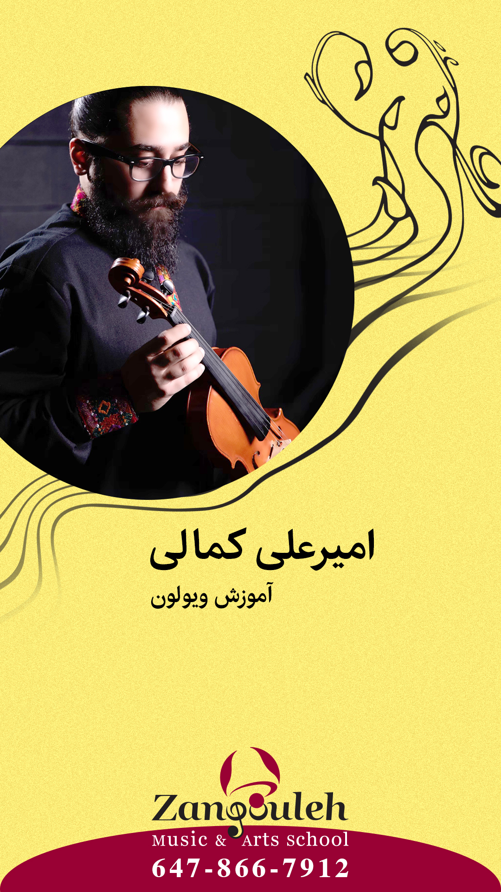
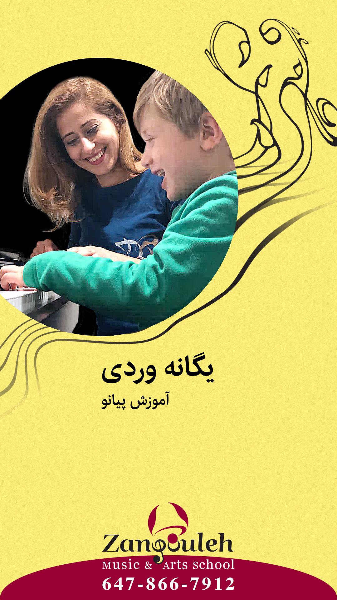
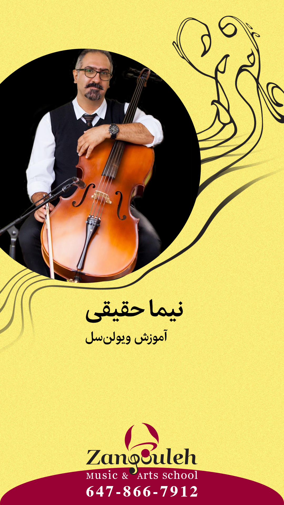
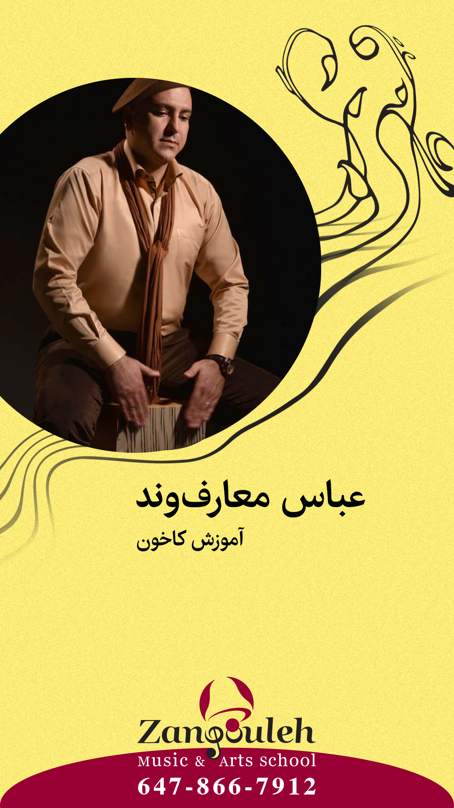
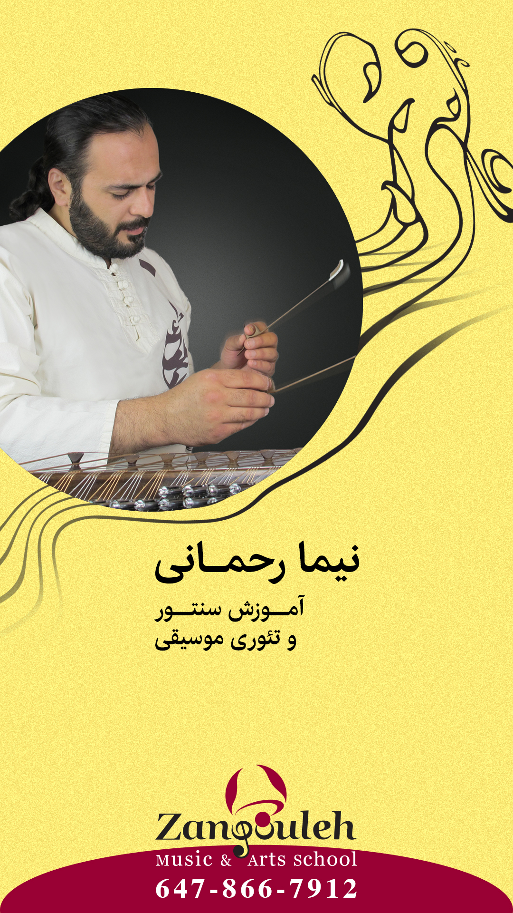
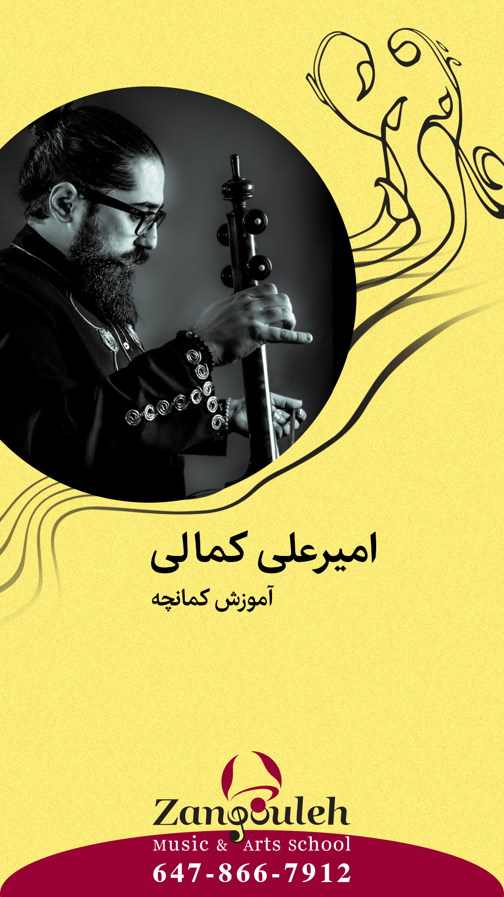

Every instructor at Zangouleh is a practising professional — performing artists who bring real-world mastery to every lesson. We hire only those who perform what they teach.

Amirali Kamali
Violin
Accomplished violinist with years of performance and teaching experience · Persian and classical music specialist

Yaganeh Vardi
Piano
Piano teacher specialising in children and adults · Warm and patient approach · Brings out every student's full potential

Nima Hagighi
Cello
Cellist with deep knowledge of classical repertoire · Focused on building solid technique from the ground up

Abbas Maarefvand
Cajon
Percussion specialist with focus on cajon · Creative and high-energy teaching style · Extensive performance background

Nima Rahmani
Santur · Music Theory
Santur player and music theory instructor · Deep mastery of Persian classical music and composition

Amirali Kamali
Kamancheh
Master of kamancheh and Persian classical music · Bringing authenticity and depth to every lesson
Student Success Stories
What Our Students Say
Starting piano at 40 felt impossible — until Zangouleh. Sara's patience and expertise made every lesson a joy. One year later, I performed at the student concert.
Piano · Adult Beginner
My son started Tar classes at age 8. He's now 12, has performed at Tirgan Festival, and speaks about music with a depth that amazes everyone around him.
Parent · Tar Program
The Music Wellness classes transformed my relationship with anxiety. The Daf rhythm therapy sessions are unlike anything else I've experienced. Deeply healing.
Music Wellness Program